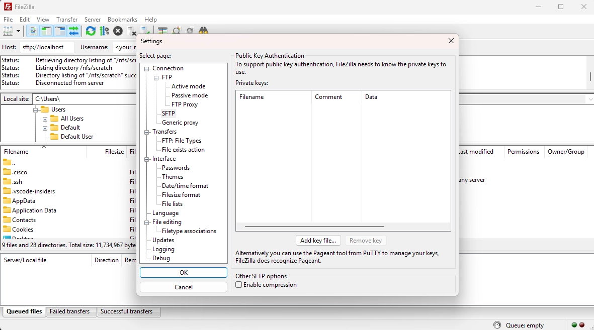
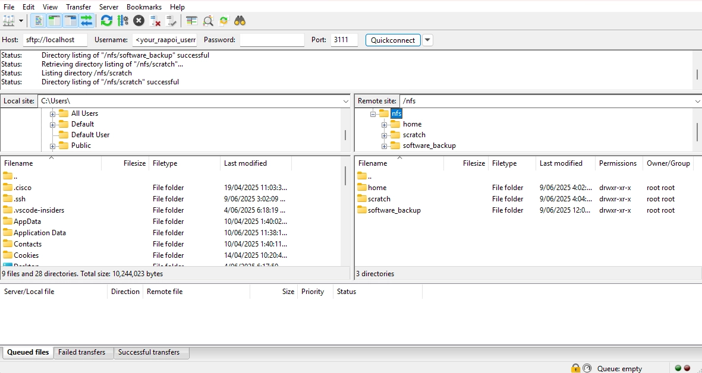

Bigger Data Transfer Using a Compute Node¶
Tip
Windows users are recommended to use Windows Terminal (PowerShell) in Windows 11 or Git Bash for the following instructions to work.
Step 1. Download and install FileZilla Client from the official webpage.
Step 2. Now you need to create SSH keys on your local machine, (existing SSH keys can also be used — no need to create new ones. If you already have SSH keys set up, go to Step 3) and upload them to Rāpoi. The detailed instructions for creating the SSH keys are given below:
- If you are a Windows user, click Start and search for "Terminal" or "PowerShell" and open it. Mac users can open the Terminal app.
- Type
cdand press Enter to go to the user's home directory. My username isaliin the example below:
- Then enter the
.sshdirectory by typing:
- Now type
ssh-keygenand press Enter:
- Follow the prompts in the terminal to generate the SSH key pair. When it asks for the file to save the key, you can give a different name, otherwise you can keep the default one, i.e.
id_ed25519.
C:\Users\ali\.ssh> ssh-keygen
Generating public/private ed25519 key pair.
Enter file in which to save the key (C:\Users\ali/.ssh/id_ed25519):
Enter passphrase (empty for no passphrase):
Enter same passphrase again:
Your identification has been saved in C:\Users\ali/.ssh/id_ed25519
Your public key has been saved in C:\Users\ali/.ssh/id_ed25519.pub
The key fingerprint is:
SHA256:Dc7PcRDKmdKDETrX0+FK7B1IizHxxMP1C2jdOEr3HH8 ali@mypc
-
If you type
ls, you'll see two files,id_ed25519andid_ed25519.pub, in the current directory. We need to upload the public keyid_ed25519.pubto Rāpoi. -
Send the public key to Rāpoi
-
For macOS and Linux users, or Windows users using Git Bash when already inside the
.sshdirectory. ReplaceRAAPOI_USERNAMEwith your actual Rāpoi username: -
For Windows users using Windows Terminal or PowerShell. Replace
RAAPOI_USERNAMEwith your actual Rāpoi username:
-
Now it's time to test the new SSH keys. Try logging in as shown below and it should not ask you for your Rāpoi password.
- For macOS and Linux users, or Windows users using Git Bash when already inside the
.sshdirectory. ReplaceRAAPOI_USERNAMEwith your actual Rāpoi username:
- For Windows users using Windows Terminal or PowerShell. Replace
RAAPOI_USERNAMEwith your actual Rāpoi username:
If it logs in successfully, it means that the SSH keys are working correctly.
Step 3. Add your SSH key inside the FileZilla client. Go to Edit > Settings > select SFTP under Connection. Click on Add key file… and select your private key from the file browser window.

Step 4. On your local machine, open a terminal window (Windows Terminal, Windows PowerShell, Git Bash, etc.), then start an SSH tunnel using local forwarding by typing the following command:
Once logged in, allocate resources using the same terminal. You'll see the USERNAME@raapoi-login change to USERNAME@amd01n04.
RAAPOI_USERNAME@raapoi-login:~$ srun --partition=quicktest --nodelist=amd01n04 --cpus-per-task=2 --mem=4G --time=05:00:00 --pty bash
srun: job 3497952 queued and waiting for resources
srun: job 3497952 has been allocated resources
RAAPOI_USERNAME@amd01n04:~$
Step 5. Connect the FileZilla session.
-
Now is the time to connect FileZilla to the interactive session we just got on Rāpoi. Follow the instructions below:
- Enter these details in the QuickConnect bar inside the FileZilla client window:
Host:
sftp://127.0.0.1Username:<your_raapoi_username>Password:<leave_empty>Port:3111
-
Then choose
QuickConnect. -
Once a connection is established, you'll see the local and remote files and folders. You can drag and drop files to and from Rāpoi.
Tip
The instructions above assume that the node amd01n04 is up and has sufficient resources available. There may be times when this is not the case and you need to adapt these steps to access CPUs on a different node. As a workaround, you'll need to modify Step 4 to point towards a different node.